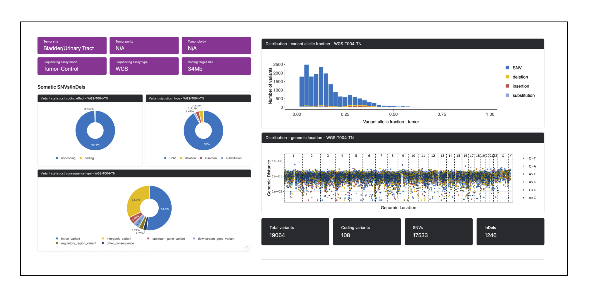
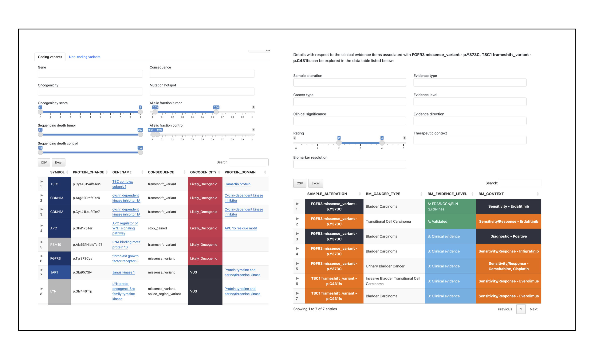
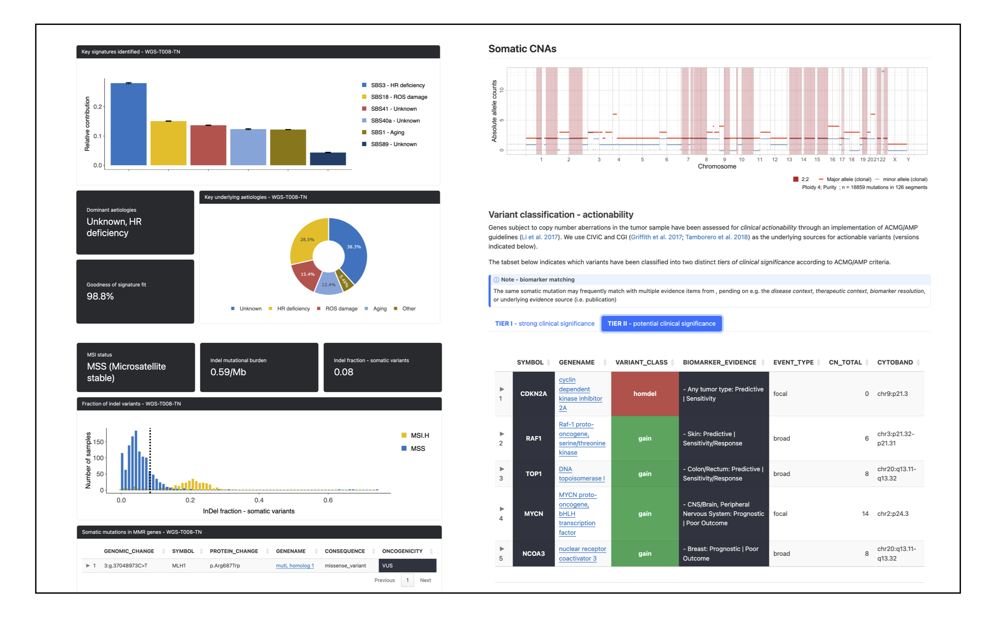

The Personal Cancer Genome Reporter (PCGR) is a stand-alone software package for functional annotation and translation of individual tumor genomes for precision cancer medicine. It interprets primarily somatic SNVs/InDels and copy number aberrations, and has additional support for interpretation of bulk RNA-seq expression data. The software classifies variants both with respect to oncogenicity, and actionability. Interactive HTML output reports allow the user to interrogate the clinical impact of the molecular findings in an individual tumor.
- Variant classification
- according to oncogenicity: evaluating the oncogenic potential of somatic DNA aberrations (VICC/CGC/ClinGen guidelines)
- according to actionability: mapping the therapeutic, diagnostic, and prognostic implications of somatic DNA aberrations (ACMG/AMP guidelines)
- Tumor mutational burden (TMB) estimation
- Mutational signature analysis
- Microsatellite instability (MSI) classification
- RNA expression analysis - outlier detection, similarity analysis, and immune contexture profiling
PCGR supports both of the most recent human genome assemblies (GRCh37/GRCh38), and accepts variant calls from both tumor-control and tumor-only sequencing assays. Much of the functionality is intended for whole-exome/whole-genome sequencing assays, but you can also apply PCGR to output from targeted sequencing panels. If you are interested in the interrogation of germline variants and their relation to cancer predisposition, we recommend trying the accompanying tool Cancer Predisposition Sequencing Reporter (CPSR).
Example screenshots from the quarto-based cancer genome report by PCGR:

PCGR originates from the Norwegian Cancer Genomics Consortium (NCGC), at the Institute for Cancer Research, Oslo University Hospital, Norway.
Top News
- July 2024: 2.0.1 release
-
June 2024: 2.0.0 release
- Details in CHANGELOG
- Massive reference data bundle upgrade, new report layout, oncogenicity classification++
- Support for Singularity/Apptainer
- Major data/software updates:
- Ensembl VEP
v112 - ClinVar (2024-06)
- CIViC (2024-06-21)
- GENCODE
v46/v19(GRCh38/GRCh37) - CancerMine
v50(2023-03) - UniProt KB
v2024_03
- Ensembl VEP
- February 2023: 1.3.0 release
-
November 2022: 1.2.0 release
- Keep only autosomal, X, Y, M/MT chromosomes
- Import bcftools as dependency
Why use PCGR?
The great complexity of acquired mutations in individual tumor genomes poses a severe challenge for clinical interpretation. PCGR aims to be a comprehensive reporting platform that can
- systematically interrogate tumor-specific variants in the context of known therapeutic, diagnostic, and prognostic biomarkers
- highlight genomic aberrations with likely oncogenic potential
- provide a structured and concise summary of the most relevant findings
- present the results in a format accessible to clinical experts
PCGR integrates a comprehensive set of knowledge resources related to tumor biology and therapeutic biomarkers, both at the gene, and at the level of individual variants. The software generates a comprehensive molecular interpretation report that supports the translation of individual cancer genomes towards molecularly guided treatment strategies.
Getting started
-
Learn more about:
- Details regarding PCGR input files, and how they should be formatted
- Configuration of key settings
- The types and contents of PCGR output files
- Variant classifications implemented in PCGR
- Primary tumor sites used in PCGR
- The list of gene and variant annotation resources used in PCGR annotation
Citation
If you use PCGR, please cite our publication:
Sigve Nakken, Ghislain Fournous, Daniel Vodák, Lars Birger Aaasheim, Ola Myklebost, and Eivind Hovig. Personal Cancer Genome Reporter: variant interpretation report for precision oncology (2017). Bioinformatics. 34(10):1778–1780. doi.org/10.1093/bioinformatics/btx817